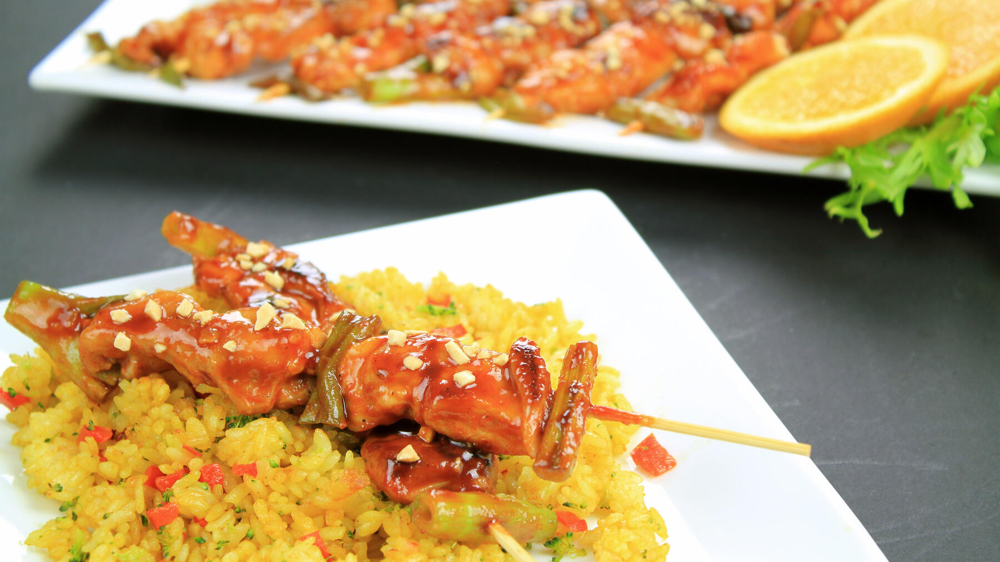

Zurück zur Übersicht
Gegrillte Hähnchenspieße mit Gewürzreis
Über Nacht in Joghurt, Zitrone und Gewürzen mariniert, gegrillt und mit Kurkuma-Zimt-Reis serviert.
- Zeit
- 50 Min.
- Schwierigkeit
- mittel
- Kategorie
- Klassiker
- Ernährung
- mit Fleisch
Zutaten
Portionen
Für die Spieße
- 500 gPolofino
- 200 gJoghurt
- 1 ELOlivenöl
- 1 TLPaprika
- Zimt (⅛ TL)
- ½ TLChiliflocken
- 1Bio-Zitrone
- 1 TLSalz
- ½ TLPfeffer
- 5Knoblauchzehen
- 1rote Zwiebel
Für den Reis
- 1½ TasseReis
- 3 ELButter
- 1Zwiebel
- 2Knoblauchzehen
- ½ TLKurkuma
- ¼ TLZimt
- 1¼ TLSalz
- 2¼ TasseWasser
- ¼ TLSchwarzer Pfeffer
Zubereitung
- Für die Marinade Joghurt, Öl, Gewürze, 2 EL Zitronensaft und den Knoblauch in einer Schüssel verrühren.
- Das Fleisch in etwa 4 cm große Stücke schneiden und abwechselnd mit Stücken der roten Zwiebel auf Spieße stecken.
- Spieße auf ein Blech legen, mit der Marinade bestreichen, abdecken und mindestens 8 Stunden oder über Nacht im Kühlschrank ziehen lassen.
- Grill auf mittlere bis hohe Hitze vorheizen. Spieße 13–15 Minuten grillen und dabei regelmäßig wenden, bis sie goldbraun und durchgegart sind.
- Währenddessen die Butter in einem Topf schmelzen und die fein gehackte Zwiebel darin glasig dünsten. Knoblauch und Gewürze dazugeben und kurz mitrösten.
- Reis dazugeben und unter Rühren 2–3 Minuten mitbraten. Wasser, Salz und Pfeffer zugeben, aufkochen und zugedeckt bei niedriger Hitze 15–18 Minuten köcheln lassen, bis das Wasser aufgesogen ist. Mit den Spießen servieren.
Hinweis: Die 50 Minuten gelten ohne die mindestens 8 Stunden zum Marinieren.